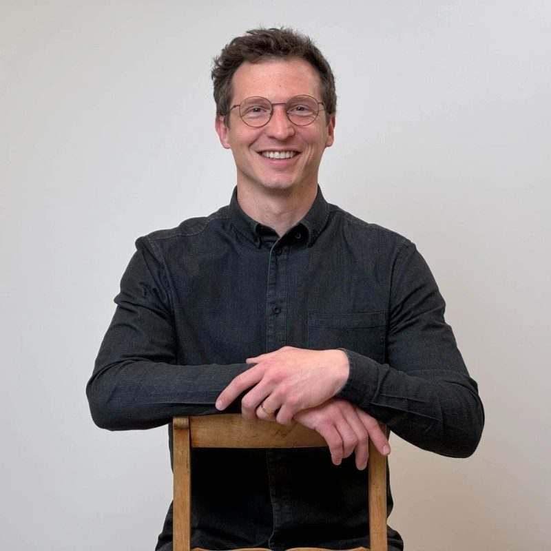

LernenohneHürden
Aus der Praxis.
Für mehr Selbstständigkeit.
Tippen lernen. Arbeitsblätter ausfüllen. Texte leichter lesen. Drei Apps für Kinder mit und ohne Sehbehinderung und die Fachpersonen an ihrer Seite.
Drei
Programme
-
01

Tastenreise
Tippen lernen
Die Tastatur wird vertraut. Ein 10-Finger-Trainer für Kinder mit und ohne Sehbehinderung – an einer echten Tastatur.
Tastenreise kennenlernen → -
02

PDF Text Field
Formulare erstellen
Vom Arbeitsblatt zum ausfüllbaren PDF. Ein Werkzeug für Lehrpersonen, das Antwortbereiche erkennt und daraus echte Formularfelder macht.
PDF Text Field kennenlernen → -
03

CVI PDF
Texte lesbarer machen
Arbeitsblätter gut lesbar machen. CVI PDF setzt den Text in einer klaren Schrift mit mehr Abstand neu. Bilder, Tabellen und Linien bleiben an ihrem Platz.
CVI PDF kennenlernen ↗
Im eigenen
Tempo
Eine Tastatur selbst bedienen. Ein Arbeitsblatt selbst ausfüllen. Einen Text selbst lesen. Hinter allen Programmen steht dieselbe Idee: Werkzeuge zu entwickeln, die selbstständiges Lernen und Arbeiten unterstützen.
Über
mich

Ich heisse Philipp Penner und lebe in Zürich.
Ich bin Heilpädagoge und arbeite mit Kindern und Jugendlichen mit Sehbehinderung. Heute leite ich ein Team, das diese Schülerinnen und Schüler in ihren Schulen begleitet und berät.
Im Alltag sehe ich oft, wo es noch hakt. Ein Arbeitsblatt, das ein Kind auf dem iPad nicht ausfüllen kann. Ein Text, der zu eng gesetzt ist. Ein Programm, das nur mit Konto oder Internet läuft.
Aus solchen Momenten entstehen meine Apps. Sie sind für Menschen gedacht, die schlecht oder gar nicht sehen, und für die Fachpersonen, die mit ihnen arbeiten.
Alle Apps laufen nur auf dem Gerät. Es werden keine Daten gesammelt oder verschickt.
Lokal.
Offline.
Ohne KI.
Tastenreise, PDF Text Field und CVI PDF arbeiten vollständig lokal auf dem iPad beziehungsweise Mac. Für die Nutzung ist keine Internetverbindung erforderlich.
Die Verarbeitung erfolgt auf deinem Gerät. Die Programme verwenden keine KI, enthalten keine Analysefunktionen und versenden keine Fehlerberichte.
- Ohne Internet nutzbar
- Keine KI
- Keine Nutzungsanalyse